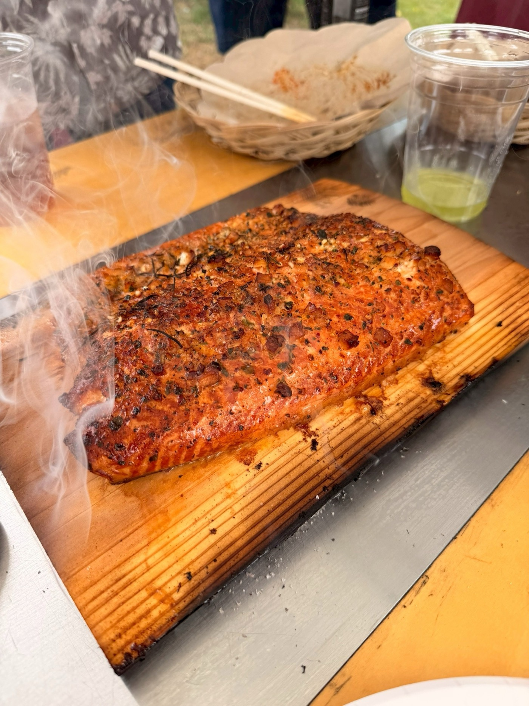
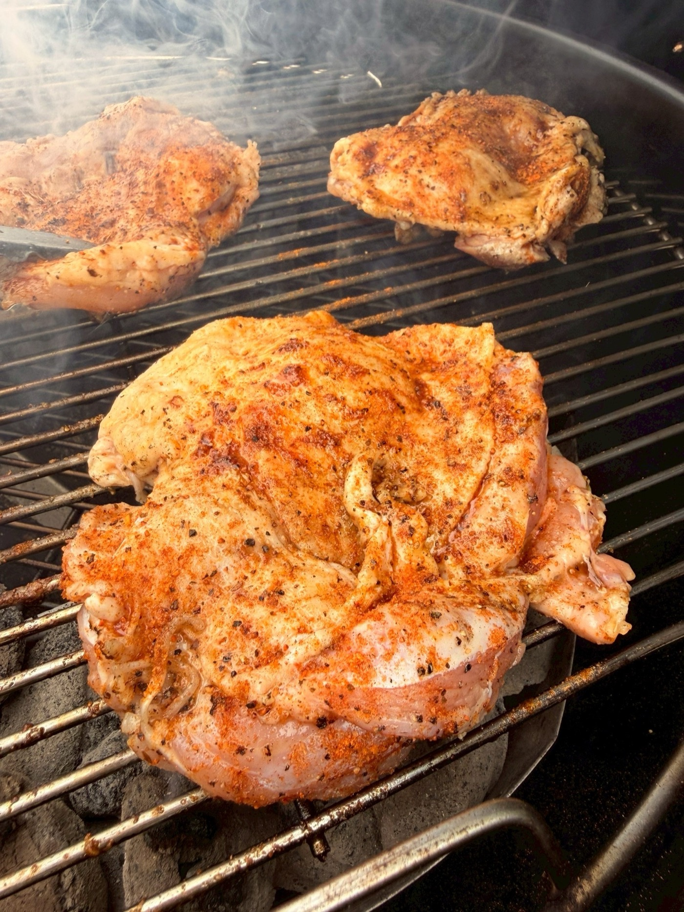

MONTHLY BBQ — INVITATION
YORONバーベキュー、はじめます。
朝から気持ちのいい時間に火を入れて、お昼を挟んでご一緒します。月に一度、誰でも来られるオープンなYORONバーベキューです。
SCHEDULE — 今後の開催予定
月1回、この日程で火を囲みます。
基本は月に一度の日曜開催。都合が合わない月があっても、翌月また会えます。
※9月は連休のためお休みです。日程は変更になる場合があります。開催済みの回には自動で斜線が入ります。
「バーベキュー」と聞くと、多くの方は——
薄切りの肉を網に乗せ、
いつのまにか焦げて、ナスがしおれて、
それでも楽しいねと笑い合う、
そんな光景を思い浮かべるかもしれません。
それはそれで、もちろん楽しい。ただ、料理そのものを味わう、味の細部にゆっくり降りていく、というような時間ではないように思います。
僕らがこの日に提供したい「バーベキュー」は、少しだけ別の体系に属しています。
蓋を閉めた炭のグリル。電気やガスも織り交ぜながら、焼く前に丁寧に下味をつけて、低温でゆっくり、じっくり、時間をかけて火を通していきます。
すると、肉も、魚も、野菜も、これまで自分が知っていたものとは、まるで別の食べ物のように、とてつもなく美味しくなる。
これを5年ほど続けてきたのが、あんちゃん（石原 杏莉）。山根は、あんちゃんは日本一美味しいバーベキューを提供してくれる人だと思っています。そのバーベキューに山根と植田が出会い、強烈に感動したことをきっかけに、この3人で「YORON BBQ」という取り組みを続けています。
少し、山根と植田の個人的な話を。ふたりはこの40年、食べることが大好きで、さまざまな美味しいご飯を堪能してきました。それでも、あんちゃんのバーベキューを口にしたときの感覚は、これまでの中でいちばん——というよりは、「美味しい」という言葉を超えた、幸せ、あるいはそれすら超えた何か、としか言いようのないものでした。気がつくと、いつもの自分とは少し違う世界に入っているような、そんな感覚すらありました。
日頃、仕事や趣味やさまざまな活動にアグレッシブに向き合っている皆様。だからこそ、僕らがそうして受け取った体験を、一度ご一緒に受け取っていただきたい。そう思って、この場を開くことにしました。
語りたいことはたくさんあるのですが、多くを語ってしまうと、皆さんがそこから何を感じ・何を持ち帰るかを僕らのほうで限定してしまいそうなので、この案内ではこのくらいの説明にとどめさせてください。
普通の食材が、異常に美味しくなる。
バーベキューならではのメニューをたくさん取り揃えてお待ちしています。ぜひ、お楽しみに。
GALLERY
火のまわりで起きていること。






DETAILS — 開催概要（第1回）
2026年7月26日（日）、武蔵野公園で。
日時・集合
7/26（日）10:00〜13:00頃
10:00 現地集合。少々朝早くて恐縮ですが、本バーベキュー場はAMの部とPMの部があり、気持ちのいいAMの部にしています。
会費
5,000円 / 1人
施設利用料＋食材を含みます。当日の参加人数はホストを合わせて10名程度を予定。お子様の参加もウェルカムです（お子様用に最適化されたメニューではない点だけご了承ください）。
持ちもの・服装
- お飲み物（お酒・ソフトドリンク）のみご持参ください。機材・炭・食材はすべてこちらで用意します。簡単なお茶は一定準備します。
- 服装は煙の匂いがついても気にならないもの（グリルに過度に近寄らなければ大丈夫です）。
- 焼く工程も一緒に楽しみたい方は、その旨教えてください。エプロンがあると汚れを気にせず動けます。
- 雨天時は別途ご連絡します（テントがあるので小雨は問題ない見込みです）。
場所・アクセス — 武蔵野公園バーベキュー広場 ↗
- 電車＋バス（おすすめ）：JR線 吉祥寺駅／三鷹駅／武蔵境駅より関東バス「武蔵野大学」下車すぐ。西武新宿線 東伏見駅より はなバス「武蔵野大学」下車すぐ。西武新宿線 西武柳沢駅からは徒歩約15分。
- タクシー：吉祥寺駅／三鷹駅／武蔵境駅より1,500〜2,000円程度。3〜4名で駅集合→タクシーが最も費用対効果が良いかもしれません。
- お車：駐車場111台（有料：550円/台、以降60分550円、当日最大1,500円/台）。※利用はバーベキューを含む公園の施設利用者に限ります。
BEFORE THE DAY — 事前にお伺いしたいこと
ご返事のときに、3つだけ教えてください。
1. 苦手な食材・アレルギー
当日のメニューはお肉類・魚介類などの予定です。お苦手なもの・お避けになりたい食材があればお知らせください。可能な範囲で配慮いたします。
2. 一緒に焼いてみたいか
食べるだけでなく、焼く側としても参加してみたい方は教えてください。仕込みからの工程も、YORONバーベキューの醍醐味です。
3. 写真・SNSについて
当日は料理や場の様子を写真・動画で記録し、後日SNS等に掲載する可能性があります。「顔出しNG」「掲載自体NG」などのご希望があれば事前にお知らせください。
JOIN — 参加方法
「行ってみたい」の一言で、成立です。
紹介も資格もいりません。月に一度開催していくので、今回が合わなければ次の回でも。
「行ってみたい」を送る
ホスト（山根・うえたく）へのLINE / メッセージ、Instagram @afro_anri へのDM、またはお問い合わせフォームから一言どうぞ。
3つの質問に答える
アレルギー・焼きたいか・写真OKか。それだけ教えていただければ、あとの案内はこちらから。
当日、飲み物だけ持って来る
火は、こちらで起こしておきます。